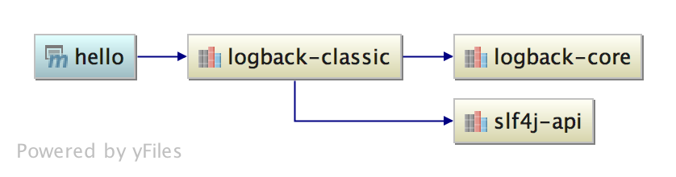
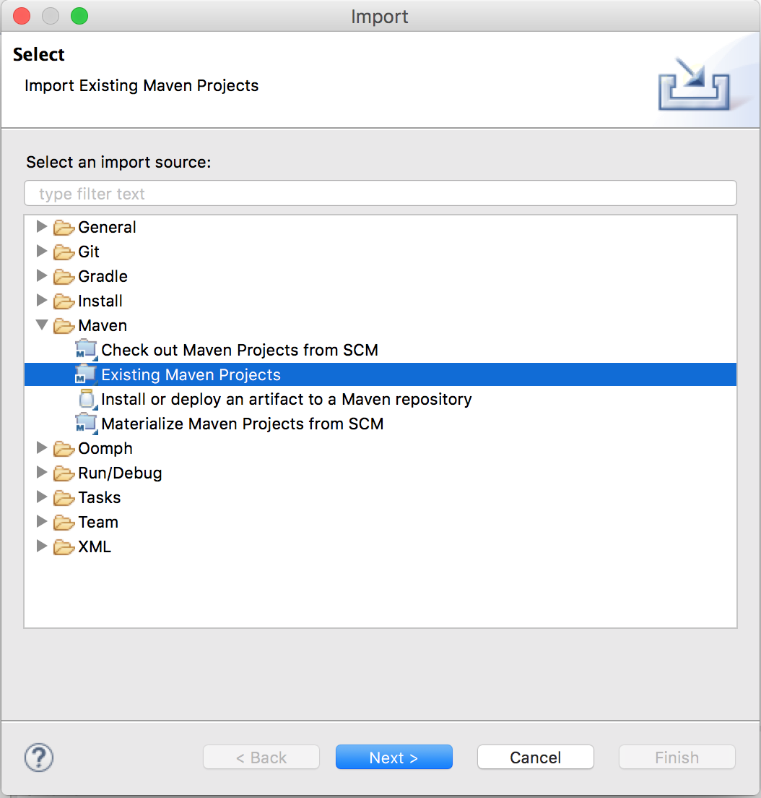
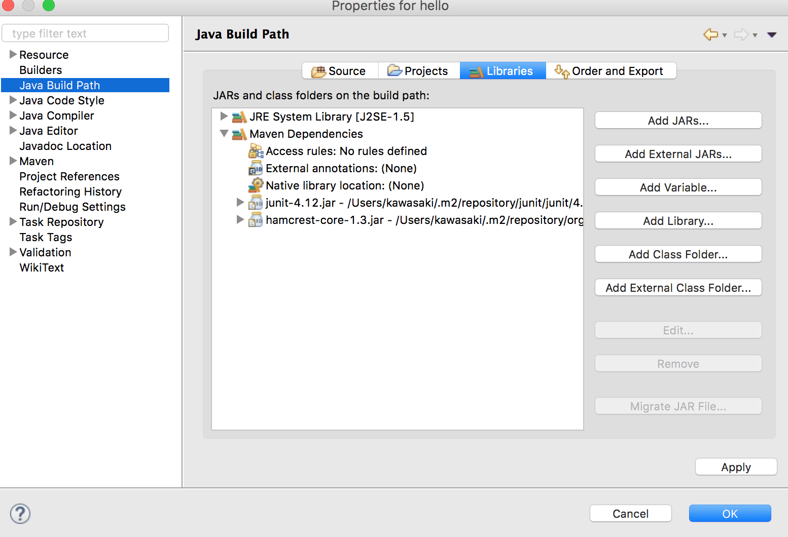
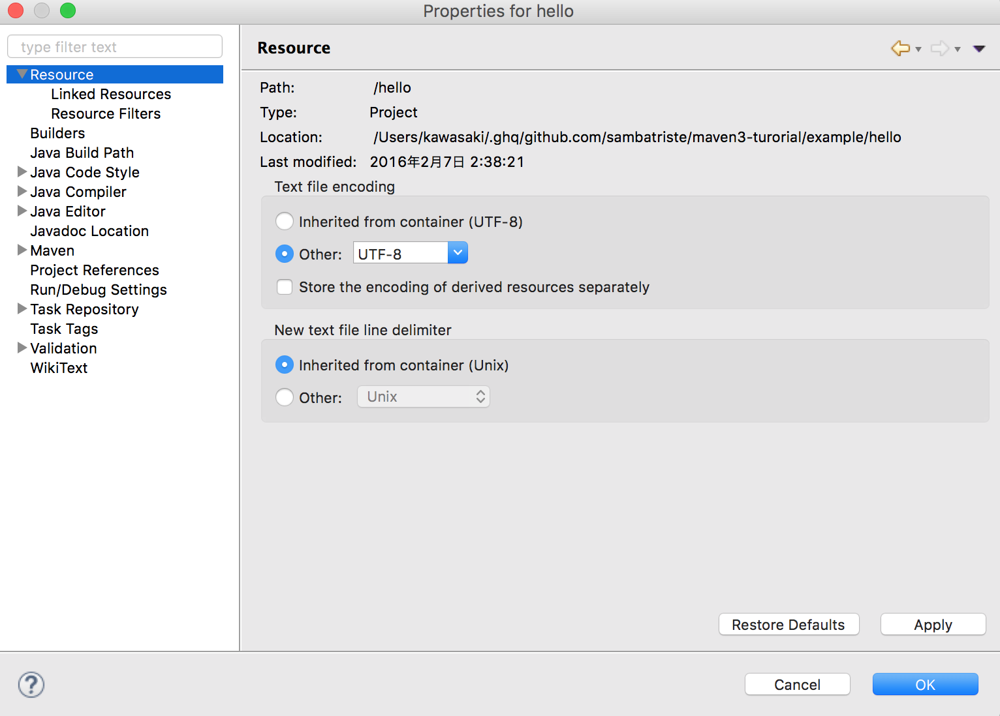
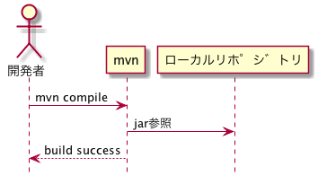
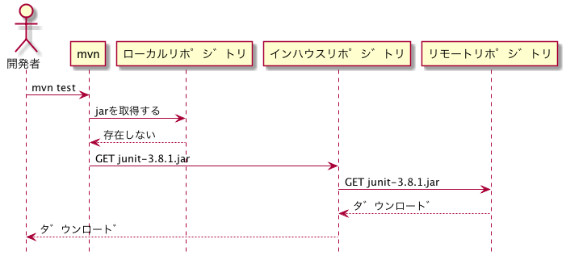

Maven3 チュートリアル
Table of Contents
1 Hello Maven
1.1 archetypeからプロジェクト作成してみよう
シンプルなpom.xmlから学習するため、 デフォルトのアーキタイプからプロジェクトを生成します。
mdkir example cd example mvn archetype:generate
アーキタイプの種類を選べと言われます。
Choose a number or apply filter (format: [groupId:]artifactId, case sensitive contains): 705:
そのままエンターキーを押し、デフォルトの705(maven-archetype-quickstart)を選択します。
その他入力を求められますので以下のように入力します。
| 要素 | 入力例 |
|---|---|
| groupId | com.example |
| artifactId | hello |
| version | 1.0-SNAPSHOT |
| package | com.example |
1.2 pom.xmlを見てみよう
作成されたpom.xmlを眺めてみます。
cd hello cat pom.xml
1.2.1 pom.xml
<project xmlns="http://maven.apache.org/POM/4.0.0" xmlns:xsi="http://www.w3.org/2001/XMLSchema-instance"
xsi:schemaLocation="http://maven.apache.org/POM/4.0.0 http://maven.apache.org/xsd/maven-4.0.0.xsd">
<modelVersion>4.0.0</modelVersion>
<groupId>com.example</groupId>
<artifactId>hello</artifactId>
<version>1.0.0</version>
<packaging>jar</packaging>
<name>hello</name>
<url>http://maven.apache.org</url>
<properties>
<project.build.sourceEncoding>UTF-8</project.build.sourceEncoding>
</properties>
<dependencies>
<dependency>
<groupId>junit</groupId>
<artifactId>junit</artifactId>
<version>4.12</version>
<scope>test</scope>
</dependency>
</dependencies>
</project>
1.3 ビルドしてみよう
コマンドを実行して、成果物が作成されることを確認しましょう。
| コマンド | target配下の成果物 | 説明 |
|---|---|---|
| mvn compile | classes/ | classファイル |
| mvn test | test-classes/,surefire-reports/ | classファイルとレポート |
| mvn package | hello-1.0-SNAPSHOT.jar | jarファイル |
| mvn install | - | .m2/repositoryに配置される |
| mvn site | site | レポート |
| mvn clean | - | targetが削除される |
1.4 暗黙の設定値を確認しよう
mavenのpom.xmlは多くのデフォルト設定値があります。 また、他のpom.xmlから値を引き継ぐこともできます。
今のpom.xmlがどういう状態であるか確認する場合、 以下のコマンドが頼りになります。
1.4.1 完全な設定値を出力する
settings.xmlやparentのpomを含めた設定値を出力します。
mvn help:effective-pom
1.4.2 依存関係を出力する
mvn dependency:tree
[INFO] com.example:hello:jar:1.0-SNAPSHOT [INFO] \- junit:junit:jar:3.8.1:test [INFO] ------------------------------------------------------------------------ [INFO] BUILD SUCCESS [INFO] ------------------------------------------------------------------------
1.5 デフォルトのビルド設定を試してみよう。
| pom.xmlの要素 | 説明 |
|---|---|
| <sourceDirectory> | ソース置き場 |
| <testSourceDirectory> | テストソース置き場 |
| <outputDirectory> | classファイル等の出力先ディレクトリ |
| <testOutputDirectory> | テストclassファイル等の出力先ディレクトリ |
| <resources> | リソース置き場 |
| <testResources> | テストリソース置き場 |
1.5.1 コンパイル設定
1.5.2 テストコンパイル設定
src/main配下のクラスで、junitのクラスを使ってみる。
public static void main( String[] args )
{
junit.framework.TestCase.assertTrue(true);
System.out.println( "Hello World!" );
}
テストを実行します。
mvn test
[ERROR] Failed to execute goal org.apache.maven.plugins:maven-compiler-plugin:3.1:compile (default-compile) on project hello: Compilation failure [ERROR] /home/kawasaki/tmp/mvn_test/hello/src/main/java/com/example/App.java:[11,24] パッケージjunit.frameworkは存在しません
なぜコンパイルは失敗したのでしょうか？
1.6 設定を変更してみよう
1.6.1 versionを変えてみる。
<groupId>com.example</groupId> <artifactId>hello</artifactId> <version>1.0.0</version>
mvn clean package ls target
1.6.2 dependencyを変えてみる。
- JUnit4.12にしてみる
http://search.maven.org/ で検索する。
http://search.maven.org/#artifactdetails|junit|junit|4.12|jar
<dependency> <groupId>junit</groupId> <artifactId>junit</artifactId> <version>4.12</version> </dependency>依存関係はどう変化しましたか？
mvn dependency:tree
[INFO] com.example:hello:jar:1.0.0 [INFO] \- junit:junit:jar:4.12:test [INFO] \- org.hamcrest:hamcrest-core:jar:1.3:test [INFO] ------------------------------------------------------------------------ [INFO] BUILD SUCCESS [INFO] ------------------------------------------------------------------------
org.hamcrest:hamcrest-coreというライブラリは、なぜ現れたのでしょうか？
- 好きなライブラリを足してみよう
<dependency> <groupId>org.springframework.boot</groupId> <artifactId>spring-boot-starter-web</artifactId> <version>1.3.2.RELEASE</version> </dependency>
依存関係はどう変化しましたか？
mvn dependency:tree
2 依存関係
2.1 アーティファクト
mavenでは、あるmavenモジュールから作り出される成果物（典型的にはjarやwarファイル）を アーティファクト(artifact ≒ 成果物)と呼びます。
2.2 推移的依存関係
あるアーティファクトAが別のアーティファクトBに依存しているとします。 自分のモジュールにアーティファクトAを<dependecy>に加えた場合、 アーティファクトBも依存関係に含まれます。 これを推移的依存関係といいます。
2.2.1 JUnitの例

JUnitはtestスコープで使用しているので、 hamcrestもtestスコープとなる。
2.2.2 Logbackの例

2.3 <dependency>の要素
<dependecy>には依存するアーティファクトの情報を記載します。
| 要素 | 説明 | 例 |
|---|---|---|
| groupId | グループ一意に特定するID | org.springframework |
| artifactId | グループ内で成果物を一意に特定するID | spring-webmvc |
| version | バージョン | 4.2.4.RELEASE |
| scope | その依存ライブラリをどの場面で使用するか(後述) | compile |
2.4 versionの考え方
3 スコープ
3.1 スコープの種類
あるdependecyが、どのようなときに使用されるか（クラスパスに追加されるか）を 定義したものです。
| スコープ | 説明 |
|---|---|
| compile | コンパイル時に使用する |
| test | テスト時に使用する |
| runtime | 実行時に使用する |
| provided | 実行時には、実行環境により提供される |
3.1.1 クラスパスが現れる場面
そもそもクラスパスが、どのような場面で現れるかおさらいしましょう。
| シチュエーション | mvnでの例 |
|---|---|
| コードをコンパイルする | mvn compile |
| テストコードをコンパイルする | mvn test-compile |
| アプリを実行する | mvn jetty:run |
| テストを実行する | mvn test |
3.2 スコープとクラスパスの組み合わせ
上記の組み合わせをマトリックスにすると以下のようになります。
| scope | javac (src/main) | javac (src/test) | java (src/main) | java (src/test) |
|---|---|---|---|---|
| compile | o | o | o | o |
| test | x | o | x | o |
| runtime | x | x | o | o |
| provided | o | o | x | x |
3.3 小テスト
適切なスコープとその理由を考えてみよう。
| ライブラリ | 説明 | 適切なスコープ | 理由 |
|---|---|---|---|
| junit.jar | ユニットテスト用ライブラリ | ||
| ojdbc6.jar | JDBCドライバ | ||
| slf4j-api.jar | ロギングライブラリ | ||
| servlet-api.jar | Servlet API |
4 Eclipseにインポートしてみよう
4.1 MavenプロジェクトをEclipseに取り込んでみよう
File -> Import -> Existing Maven Project

4.2 Mavenの設定がどうEclipseに取り込まれているか
4.2.1 Package Exploere

- src/main/javaがソースフォルダとして認識されている
- src/test/javaがソースフォルダとして認識されている
- 依存ライブラリが追加されている(junit, hamcrest)
4.2.2 Project Properties (Source)

| ソースフォルダ | 出力先 |
|---|---|
| src/main/java | target/classes |
| src/test/java | target/test-classes |
4.2.3 Project Properties (Libraries)

- 依存ライブラリJunitが、Mavenローカルリポジトリのjarを参照している
4.2.4 Project Properties (Resource)

5 Mavenリポジトリ
5.1 リポジトリの種類
| 種類 | 説明 | 主な用途 |
|---|---|---|
| ローカルリポジトリ | ローカルPC上にあるリポジトリ( ~/.m2/repository ) | キャッシュ |
| インハウスリポジトリ | PJ内で構築したリポジトリ | PJ成果物(jar等)をPJ向けに公開する |
| リモートリポジトリ | インターネット上に公開されたリポジトリ(Maven Central, jcenter等) | ライブラリを公開する |

5.2 ローカルリポジトリ
- ファイルシステム上のキャッシュ(~/.m2/repository)。
- mavenで使用するライブラリは必ずここにキャッシュされる。

5.3 インハウスリポジトリ
5.3.1 PJのライブラリをデプロイ・取得する
インハウスリポジトリを仲介して、ライブラリの配布を行うことができます。

5.3.2 リモートリポジトリのファイルを取得する
インハウスリポジトリは、リモートリポジトリへのプロキシ、キャッシュを兼ねることが多いです。

インハウスリポジトリにキャッシュされている場合、リモートリポジトリへのアクセスは発生しません。
5.4 リモートリポジトリ
デフォルトではMaven Centralが有効なリモートリポジトリとして設定されている。
mvn help:effective-pom
<repositories>
<repository>
<snapshots>
<enabled>false</enabled>
</snapshots>
<id>central</id>
<name>Central Repository</name>
<url>https://repo.maven.apache.org/maven2</url>
</repository>
</repositories>